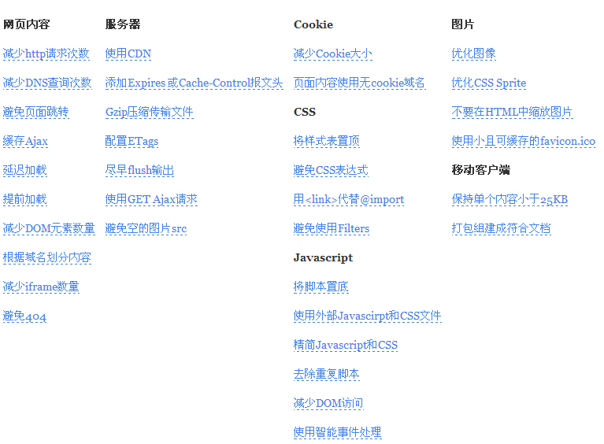
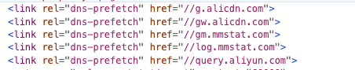

聊聊前端优化
随着互联网技术的发展，网页已经不再是简单的静态文档，而是变成了功能丰富、交互复杂、视觉精美的应用程序。然而，这些应用程序也带来了一个挑战：如何在保证功能和体验的同时，让网页快速加载并运行？这就是前端性能优化要解决的问题。
前端性能优化是一门综合性很强的学科，它涉及到网络、浏览器、JavaScript、CSS、HTML、图片等多个方面。为了达到最佳效果，我们需要从多个角度出发，采用各种技巧和工具来分析、测试、监控和改进网页的性能。
本文旨在提供一份全面而实用的前端性能优化指南。（本段文字来自chatGPT生成）

以上来自雅虎优化指南，也叫雅虎军规。
服务端篇
Content Delivery Network（CDN）
cdn具有能提高网站的访问速度、节省带宽等优势，其工作原理是通过将源站的内容缓存到分布在不同地区和运营商的边缘节点上，当用户请求时，就近返回节点上缓存的内容。cdn还涉及DNS解析、负载均衡、内容分发、调度等技术模块。
浏览器缓存
缓存的设置可以大大提高响应速度，减少http请求，节省带宽等优势，缓存包括强缓存、协商缓存等，可以添加Expires头，配置ETag等属性来选择缓存的方式。当浏览器请求一个资源时，它会检测本地缓存中是否有该资源，并且是否在有效期内，如果是，则直接从本地缓存中返回该资源。
强缓存是利用HTTP请求头中的Expires和Cache-Control 两个字段来进行控制，用来表示资源的缓存时间，Expires是一个绝对时间，Cache-Control 是一个相对时间，表示资源在多长时间内有效；一般会对js、css、图片等资源使用强缓存。
协商缓存是利用 HTTP 请求头中的 Last-Modified/If-Modified-Since 和 ETag/If-None-Match 两对字段来进行控制，用来表示资源的更新时间和唯一标识。
当浏览器再次请求一个资源时，如果本地缓存已经过期，它会携带这些字段向服务器发送请求，询问资源是否有更新。如果没有更新，则服务器会返回 304 状态码，告诉浏览器可以继续使用本地缓存。如果有更新，则服务器会返回 200 状态码和新的资源，并更新本地缓存。
AppCache
在html页面中指定manifest文件的路径，例如
<html manifest="example.appcache">在manifest文件中列出需要缓存的资源，以及在离线时显示的页面，例如：
1
2
3
4
5
6
7
8
9
10
11
12
13
14CACHE MANIFEST
# v1.0.0
CACHE:
index.html
style.css
script.js
logo.png
NETWORK:
*
FALLBACK:
/ offline.html在服务器端配置正确的MIME类型，例如
text/cache-manifest在浏览器中访问html页面，浏览器会自动下载并缓存manifest文件中指定的资源
在离线时，浏览器会从缓存中加载资源，并在无法访问的情况下显示fallback页面
Localstorge、Sessionstorage、Cookie、CacheStorage
用于本地存储，常用，不必过多解释。
减少请求数
- 小图片合并雪碧图；
- 避免重复的资源请求。减少请求数
减少文件大小，节省请求带宽
- 压缩CSS、JS、图片；
- 尽可能控制DOM节点数；
- 精简css、 JavaScript，移除注释、空格、重复css和脚本。
- 开启Gzip，Gzip的思想就是把文件先在服务器端进行压缩，且压缩率达到85%，然后再传输，传输完毕后浏览器会重新对压缩过的内容进行解压缩，并执行。。好处在于Gzip的支持已经很好，且爬虫可识别，压缩率达到66%-85%显著减少了文件传输的大小。另外，gzip对pdf文件的压缩效果不大，而且会浪费CPU。
静态资源域名
域名的要求一般是独立短小，短小可以减少头部开销，域名越短请求头的URI就越短；独立是因为独立的域名不会共享主域的cookie，可以减少请求头大小，还有一个原因是浏览器对相同域名的并发连接数是有限制的，一般同域名为6-8个连接，当然域名不是越多越好，每个域名的第一次连接都要经理DNS查询，会耗费时间，尽量控制域名在2-4个间，需要注意的是，同一静态资源在不同页面散列到不同子域下，会导致无法利用http缓存。
http2（来源：baidu.com）
- 多路复用：多路复用很好地解决如何让重要资源尽快加载这个问题。同域名下或者不同域但是同时满足同一个 IP以及使用同一个证书的这两个条件中的所有通信都在单个连接上完成，此连接上同时打开任意数量的双向数据流（ HTTP 1.1 有连接数限制）。使用多域名加上相同的 IP 和证书部署 Web 服务有特殊的意义：让支持 HTTP/2 的终端只建立一个连接，用上 HTTP/2 协议带来的各种好处；而只支持 HTTP/1.1 的终端则会建立多个连接，达到同时更多并发请求的目的。（来源：baidu.com）
- HEAD压缩：HTTP/2 将请求和响应数据分割为更小的帧，并对它们采用二进制编码（ Binary Framing ）。在 HTTP/1 中，HTTP 请求和响应都是由「状态行、请求 / 响应头部、消息主体」三部分组成，状态行和头部却没有经过任何压缩，直接以纯文本传输。在 HTTP/2 中，每个数据流都以消息的形式发送，而消息又由一个或多个帧组成。多个帧之间可以乱序发送，因为根据帧首部的流标识可以重新组装。
- 请求优先级：服务器可以根据流的优先级，控制资源分配(CPU、内存、带宽)，而在响应数据准备好之后，优先将最高优先级的帧发送给客户端。
- 服务器推送：启动Server Push，意味着服务端可以在发送页面HTML时主动推送其它资源，有自己独立的URL，可以被浏览器缓存；如果服务端推送的资源已经被浏览器缓存过，浏览器可以通过发送 RST_STREAM 帧来拒收。
客户端篇
使用外链CSS和JS，CSS放头，JS放尾，防止阻塞以减少对并发下载的影响，尽早刷新文档的输出。
html的代码优化，如：
- 避免空的图片src；
- 协议自适应，减少html文件大小，将https://和http://都替换成//。
css的代码优化，如：
- 建议使用类选择器，访问比较快；
- 不建议使用很长的base64；
- 避免CSS表达式；
- 避免使用Filters。
js的代码优化，如：
- 避免使用eval和width；
- 减少作用域链查找；
- 减少DOM访问，尽量缓存DOM；
- 充分利用事件委托；
- 减少Repaint（重绘）和Reflow（重排）最好通过批量更新元素减少重排次数，如设置类class统一更新样式，在添加多个li
- 元素将会触发多次页面重排的情况下使用 DOM fargment 在内存中创建完整的 DOM 节点，然后再一次性添加到 DOM 中。
图片格式的选择：
- 颜色较为丰富的图片而且文件比较大的（40KB - 200KB）或者有内容的图片优先考虑 jpg；图标等颜色比较简单、文件体积不大、起修饰作用的图片，优先考虑使用 PNG8 格式；图像颜色丰富而且图片文件不太大的（40KB 以下）或有半透明效果的优先考虑 PNG24 格式。
- 条件允许的，使用新格式WEBP和BPG。
- 用SVG和ICONFONT代替简单的图标。
合理分配资源加载时间，按需加载，包括CSS、JS文件以及图片、业务模块等。 根据我们网页最初加载需要的最小内容集推断其他内容延迟加载；无条件提前加载公共内容或根据用户行为推断提前加载某些内容，如根据搜索框输入的文字来判断加载的内容。加载机制如下：
- 预加载
- Dom Ready后加载
- onLoad后加载
- 滚动加载
减少DNS 查询：DNS 查询一般需要几毫秒到几百毫秒，移动环境下会更慢。我们可以预先读取DNS，减少用户等待时间。

更多代码规范相关，请参考： 前端代码规范
如果觉得我的文章对您有用，请随意打赏。